꽃을 매개로 청년이 자기 자신을 돌아보는 체험 프로젝트 「개화」를 준비하고 있습니다. 태어난 날에 담긴 열 가지 기운을 열 송이의 꽃에 비유해 "나를 닮은 꽃"을 찾고, 그 꽃의 이야기를 나누는 방식입니다. 꽃은 프로젝트에서 만든 창작 상징이며, 사주 풀이가 아니라 자기 이해와 성찰로 이어지는 대화를 목표로 합니다. 이 안내에는 12월 꽃 테마카페와 2027년 1월 후속 모임의 초안도 함께 담았습니다.
주최상생크리에이터(상생방송 서포터즈)
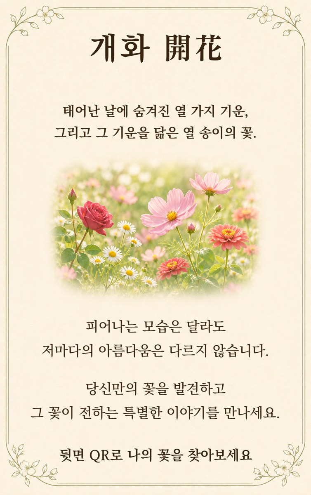
홍보 포토카드 앞면
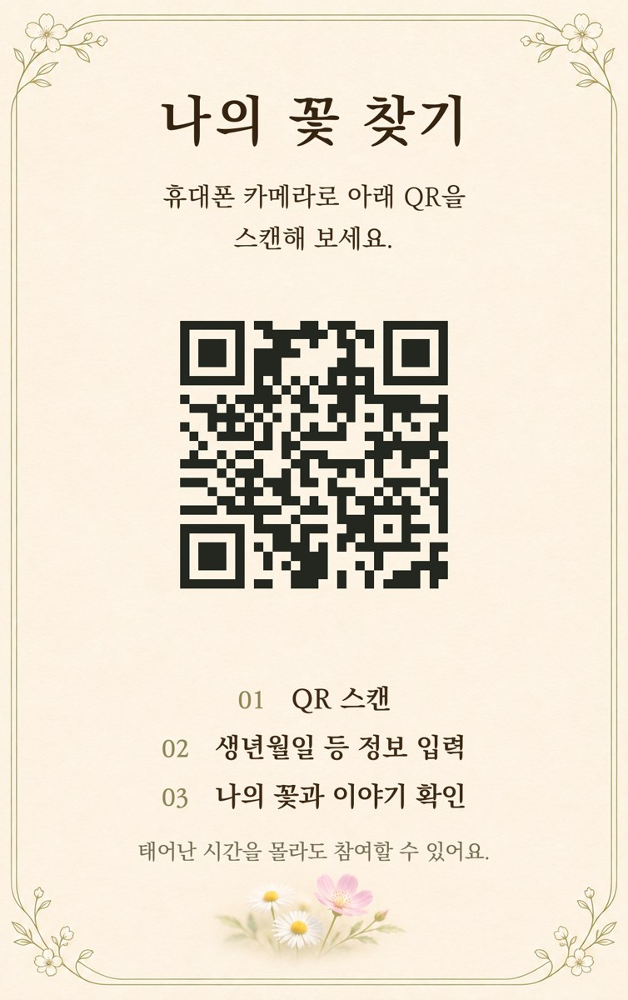
홍보 포토카드 뒷면 (QR)
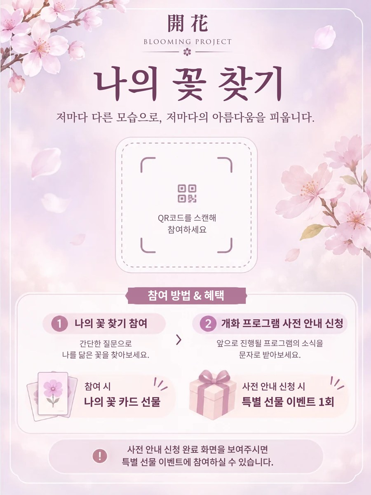
현장 게시용 「나의 꽃 찾기」 홍보물
어떻게 진행되나요
11월 21일(토)부터 주말, 대전역지나는 분들이 QR로 1~2분 만에 나의 꽃을 찾아보고, 꽃카드를 받아 갑니다. STB 상생방송 SNS 구독·팔로우 이벤트도 함께 진행합니다.
12월 중(날짜 미정), 교육관 2층 북카페꽃 테마카페 「개화 — 꽃으로 읽는 나」. 장소만 정해졌고, 날짜와 무엇을 할지는 정하는 중입니다. 개인별 꽃 이야기, 차와 향, 짧은 호흡 명상 등을 후보로 두고 있습니다.
2027년 1월 (계획)후속 모임 「숨·빛·꽃」. 호흡 명상으로 시작해 선정화·인간꽃 등 수행문화를 소개하고 함께 체험합니다.
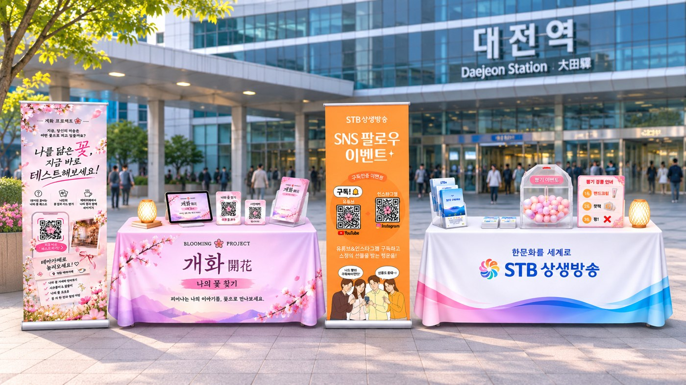
11월 21일 대전역 오프활동 현장 구성 시안. 왼쪽 개화 테이블, 가운데 SNS 이벤트 배너, 오른쪽 STB 상생방송 뽑기 테이블
12월 꽃 테마카페 초안 · 확정 전
가판대에서는 나의 꽃을, 테마카페에서는 나의 이야기를 발견합니다.
이름은 「개화 — 꽃으로 읽는 나」입니다. 대전역에서 꽃을 찾은 분과 새로 오는 청년·수험생이, 같은 꽃으로 이야기를 시작해 차를 맛보고 숨을 고르며 그 꽃이 자신에게 어떤 의미인지 돌아보는 자리입니다.
일시
12월 중. 날짜, 회차, 시간은 미정
내용
미정. 아래는 지금까지 나온 초안이며 바뀔 수 있습니다
장소
교육관 2층 북카페
대상
11월 꽃 찾기 참여자와 새로 오는 청년·수험생
정원·참가비
미정
진행 흐름 (안)
접수예약과 꽃 이름을 확인하고 개인별 꽃 이야기 결과지를 드립니다.
테이블에서 나의 꽃 이야기테이블마다 진행자가 앉아 "지금의 나와 어떤 점이 닮았나요?" 같은 질문으로 대화를 엽니다.
선택 코너아래 후보 가운데 공간과 인력에 맞는 것만 골라 엽니다.
마무리1월 「숨·빛·꽃」 모임을 소개합니다. 참가 여부는 본인이 고릅니다.
개인별 꽃 이야기에 담는 것
대전역에서는 열 가지 꽃 가운데 하나와 짧은 글만 받습니다. 카페에서는 한 사람 한 사람에게 맞춘 글을 드립니다. 성격을 진단하거나 고칠 점을 처방하는 글이 아니라, 자기 안의 가능성을 돌아보는 글입니다.
나의 꽃
꽃이 자라는 풍경
나만의 아름다움
꽃이 흔들리는 순간
꽃을 피우는 조건
개화의 메시지
선택 코너 후보 아이디어가 더 필요합니다
아래는 지금까지 나온 후보일 뿐이고, 무엇을 열지는 정하지 않았습니다. 청년이 "이건 해 보고 싶다"고 느낄 코너가 더 필요합니다. 떠오르는 것이 있으면 작은 것이라도 알려 주세요.
코너
참여자가 하는 일
아직 정할 것
차와 향
꽃을 떠올리며 차를 맛보고, 향에서 떠오르는 장면을 나눕니다.
차 3~4종과 꽃별 연결, 준비 담당
호흡 명상
곰이·범이와 단군 이야기를 들은 뒤 100초 호흡, 또는 5~7분 명상. "오늘 나에게 남겨 주고 싶은 말은 무엇인가요?"로 마칩니다.
짧은 안과 긴 안 중 선택, 조용한 자리
새해 소원 나무
2027년에 피우고 싶은 소망을 꽃 모양 종이에 적어 나무에 겁니다.
나무 모형과 소원지 준비
나의 꽃 AI 사진
자신의 꽃이 담긴 배경으로 사진을 만들어 인화본을 가져갑니다.
사진 동의와 처리, 비용, 대기 시간
꽃 굿즈
자신의 꽃과 이어진 키캡·팔찌 등을 살펴봅니다.
판매인지 증정인지, 가격과 재고
타로·오라컴, 코너를 돌 때마다 찍는 꽃 도장은 넣을지 정하지 않은 후보입니다.
이런 아이디어를 기다립니다
친구와 같이 와서 함께 할 수 있는 것
사진으로 남기고 싶어지는 것, 집에 가져갈 수 있는 것
5~10분 안에 끝나고 준비물이 간단한 것
위 후보 가운데 빼는 게 낫겠다 싶은 것
보완하려는 점
꽃 해설만으로는 찾아올 이유가 부족할 수 있으니 진로·가치관·자기 이해처럼 실제로 도움이 되는 내용을 보강합니다.
결과지가 길어 현장용으로 줄이고, 질문과 체험을 섞어 진행합니다.
진행자가 같은 말로 안내할 수 있도록 대화 가이드를 만들고 행사 전에 함께 익힙니다.
2027년 1월 「숨·빛·꽃」 초안 · 계획 단계
나의 꽃을 알았다면, 이제 그 꽃을 피워 볼 시간.
12월이 나의 아름다움을 발견하는 시간이라면, 1월은 그것을 가꾸고 피우는 방법을 직접 해 보는 시간입니다. 꽃 풀이에서 벗어나 호흡·명상·수행 체험이 중심이 됩니다.
숨 · 나에게 집중일상에서 잠시 벗어나 호흡으로 몸과 마음을 느끼는 짧은 명상
빛 · 내 안의 가능성인간꽃·선정화의 뜻을 쉬운 말로 소개하고 수행문화를 가볍게 만납니다
꽃 · 나의 아름다움을 피우다그중 하나를 함께 체험하고, 가꾸고 싶은 나의 모습을 정리합니다
대상
12월 카페 참여자와 새로 관심을 가진 분. 카페에 오지 않은 분도 따로 모집하는 안을 검토
일시·장소
2027년 1월 중. 날짜, 장소, 진행자, 정원은 미정
진행 원칙
강의보다 체험. 처음 접하는 청년도 이해할 수 있는 말로. 어떤 모임인지 미리 분명히 알리고 참가는 본인이 선택
검토 중인 안
한 번의 모임이 아니라 4주 과정으로 운영하는 안: 자기 이해 → 내면의 성장(명상·수행) → 삶의 방향(진로·가치관)
오라컴 체험을 이 후속 과정의 흥미 요소로 소개하는 안
아직 정하지 않은 것
일정 12월 테마카페의 날짜와 회차, 1월 모임의 날짜와 장소
카페에서 할 것 테이블 대화의 내용과 선택 코너 구성. 테이블 중심으로 할지 코너를 나눠 돌지
후속 모임의 형태 한 번의 모임으로 할지 4주 과정으로 할지, 주요 체험과 진행자
개인정보 꽃을 찾을 때 넣는 생년월일과 후속 안내용 연락처를 어떻게 다룰지
역할 대전역 활동, 온라인 홍보, 카페 진행자와 사전 교육을 누가 맡을지
열 가지 꽃, 열 가지 이야기
태어난 날의 열 가지 기운마다 꽃 하나를 짝지었습니다. 같은 꽃이라도 피어나는 모습은 저마다 다릅니다.
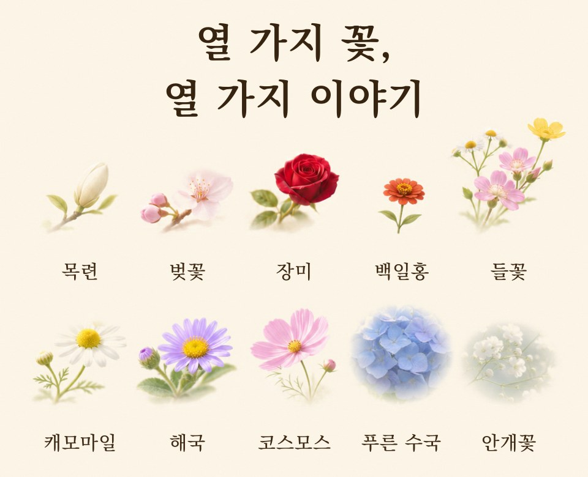
甲木목련
己土캐모마일
乙木벚꽃
庚金해국
丙火장미
辛金코스모스
丁火백일홍
壬水푸른 수국
戊土들꽃
癸水안개꽃
나의 꽃 카드
현장에서 드리는 「나의 꽃」 카드 10종 가운데 세 가지입니다. 명함 크기 카드의 앞면에는 나를 닮은 꽃과 한 줄 문구가, 뒷면에는 그 꽃이 들려주는 짧은 이야기가 담깁니다.
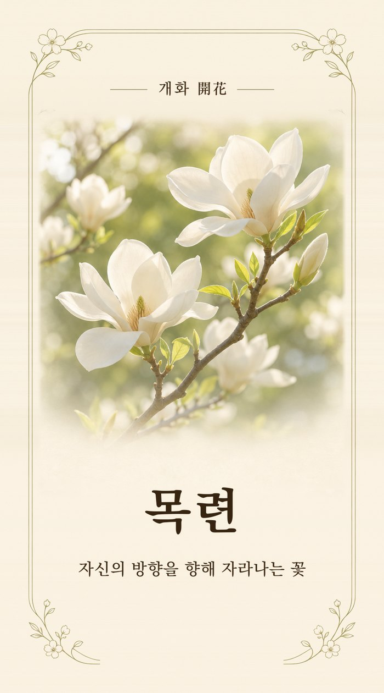
목련 · 자신의 방향을 향해 자라나는 꽃
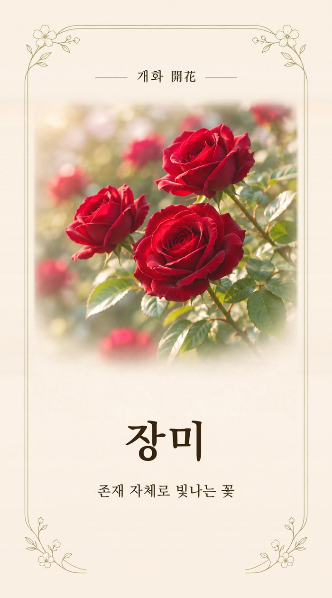
장미 · 존재 자체로 빛나는 꽃
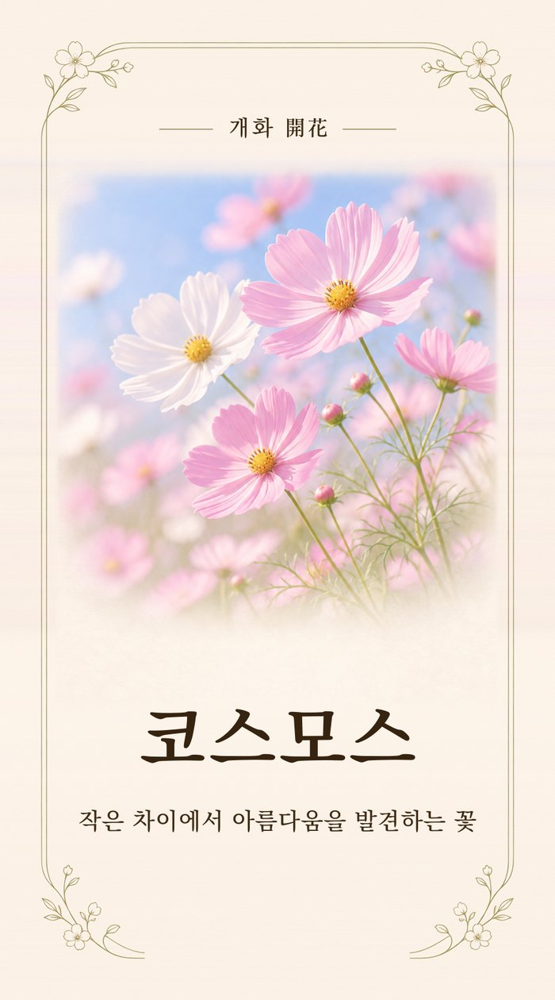
코스모스 · 작은 차이에서 아름다움을 발견하는 꽃
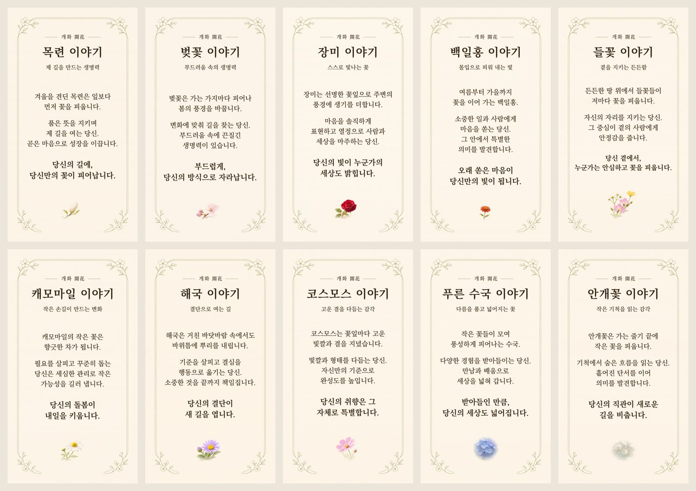
꽃카드 뒷면 10종. 꽃마다 다른 이야기
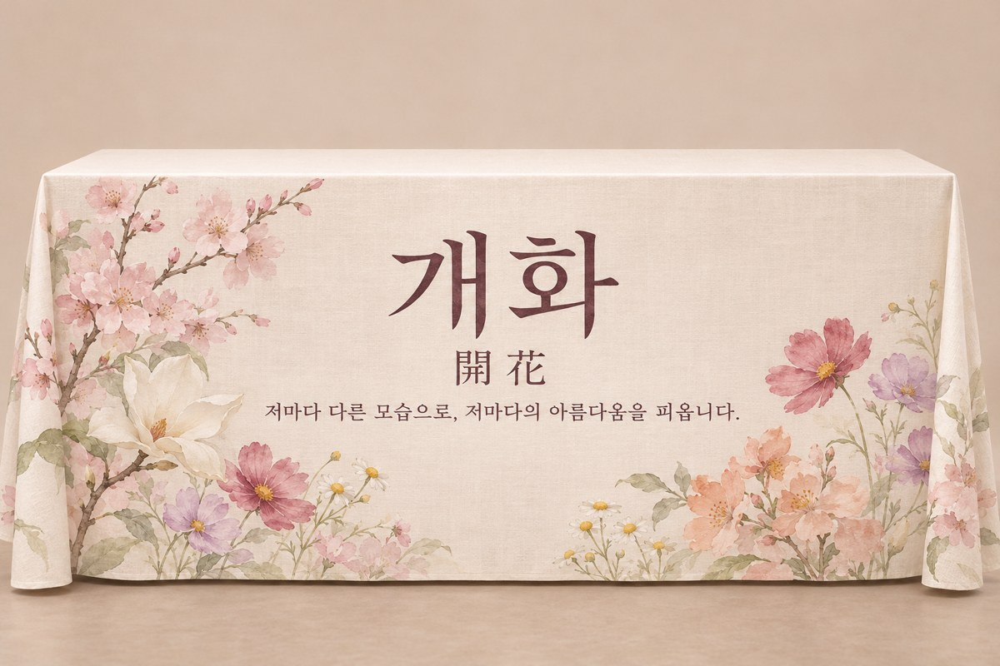
대전역 가판대 테이블보 시안
온라인으로도 알립니다
현장에 오지 못하는 분들도 참여할 수 있도록 두 가지를 함께 운영합니다.
나의 꽃 찾기 사이트휴대폰으로 접속해 생년월일을 넣으면 나의 꽃과 이야기를 바로 볼 수 있습니다. 현장 QR과 온라인 홍보가 모두 이 사이트로 이어집니다.
인스타그램 카드뉴스「개화」와 열 가지 꽃, 꽃카드를 다섯 장으로 소개합니다. 마지막 장의 QR을 캡처하면 바로 사이트로 접속할 수 있습니다.
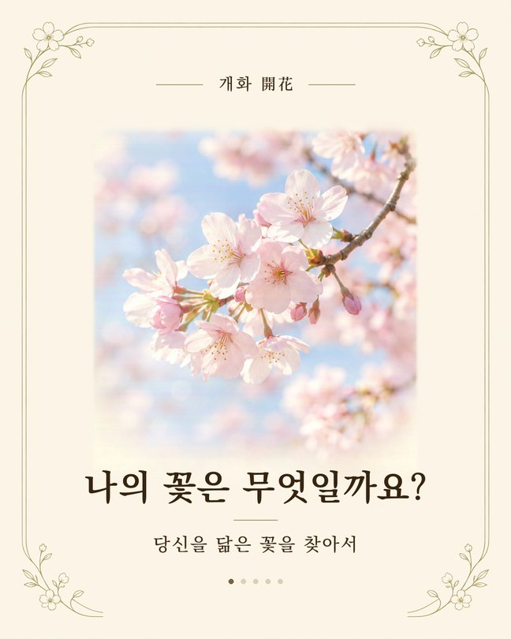
1 · 표지
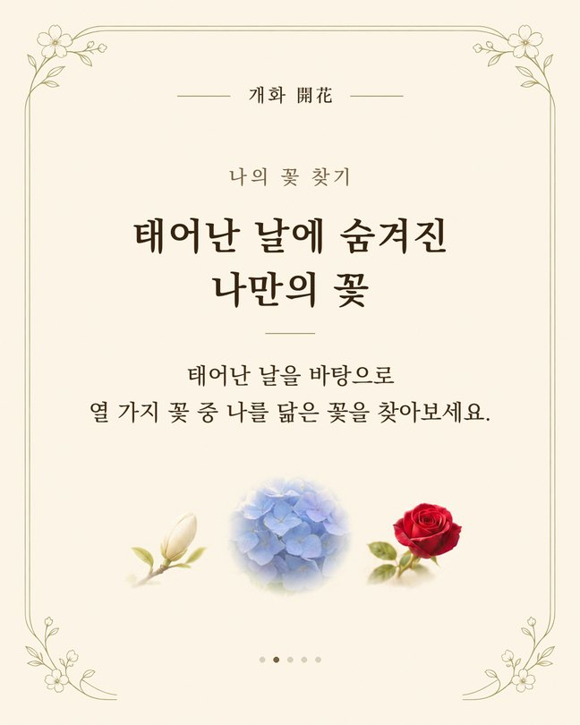
2 · 나의 꽃 찾기
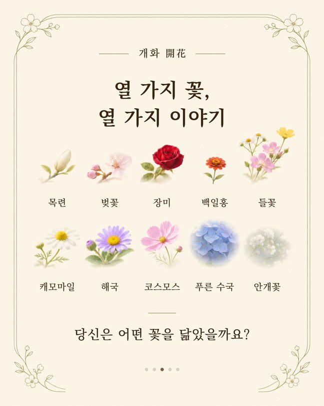
3 · 열 가지 꽃
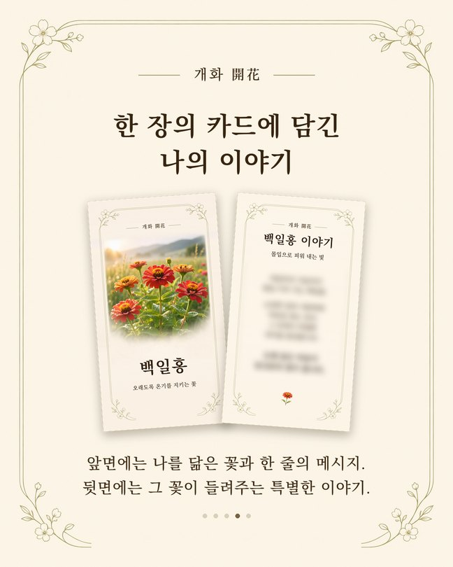
4 · 꽃카드 소개
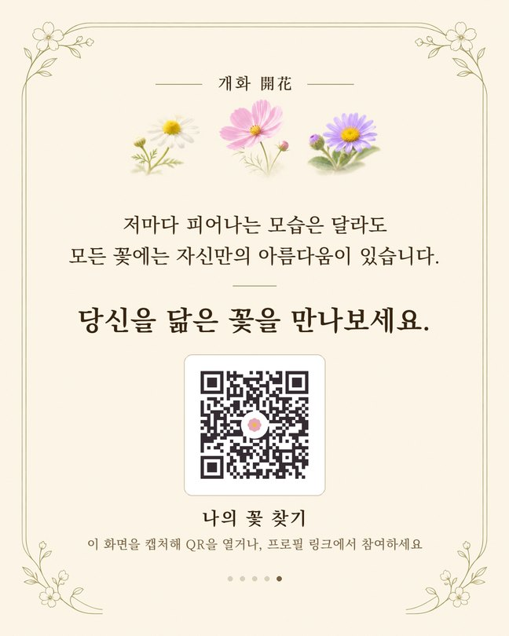
5 · QR로 참여
인스타그램 카드뉴스 5장. 휴대폰에서는 옆으로 밀어 보세요.
직접 체험해 보실 수 있어요
휴대폰으로 아래 주소에 접속해 생년월일을 입력하면 나의 꽃과 이야기를 볼 수 있습니다. 태어난 시간을 몰라도 참여할 수 있습니다.